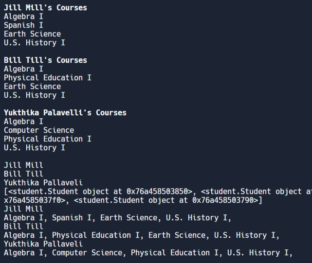
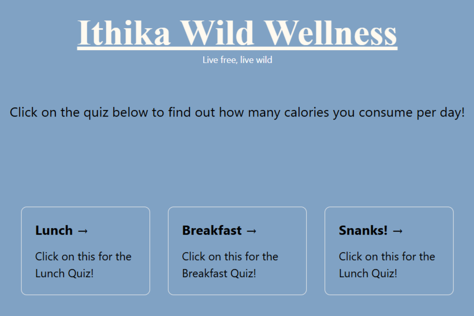
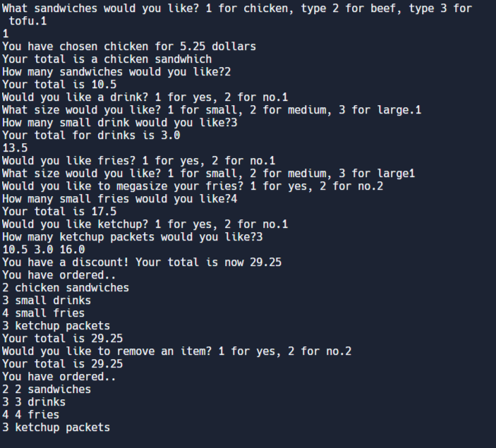

<body>
  <style>
    body {
        background-color: white;
        border: 20px dashed black;
    }
  </style>
</body>
<center>
  <table>
<h1 style= "font-size: xx-large;"> 
Some of my projects! 
</h1>
    <td>
      
        ></a>
    </td>
    <td>
      
      ></a>
    </td>
    <td>
      
      ></a>
    </td>
  <h1>Rhea Raj, Mr. Baez, Period 5, </h1>
  <p2> Hi welcome to my 3 projects, my first project was 3.2.4, this project was created over 3 months ago. The app automatically with imputs is used for school educators, and can create a schedule from the school inputs of 3 or more students at a time. In our example we see Jill, Bill, And Yukthika as 3 examples of students, and their schedules.</p2>
  <p3>The next project is made on HTML, this was finished on the 15th of may, 2024. The app is used for a target group of students in the trivalley. Data from all school systems and their daily lunches is stored on this APP. The app, depepdnign on user consumption offers students workouts, and exercize times to help lose calories that were consumed specifically from school lunch. The app has 3 different options for the students to choose, all which have links attached to the images to take them to workout routines, or tutorials!</p3>
  <p4>Lastly the next project is 3.2.1, the app was also made 3 months ago during febuary. The app's target user's are fast food workers or companies that can create online menus for their foods. The app mathematically includes all the user's meals, drinks, and sides. The app will then automatically ask if they want to remove any items and then calculate the total of the food. </p4>
